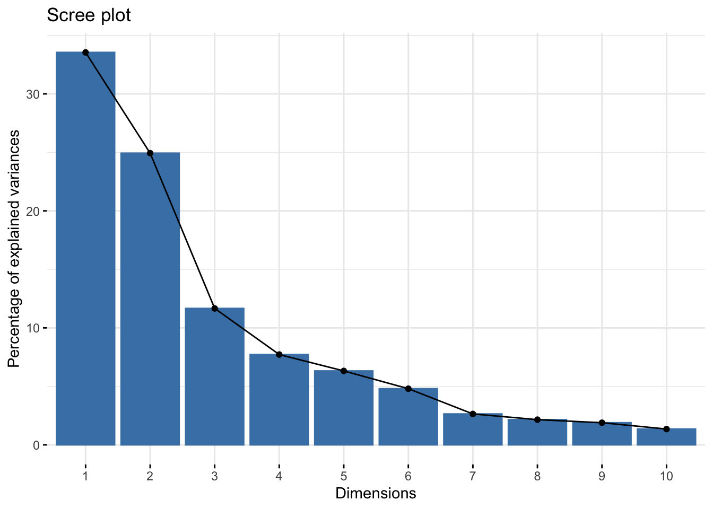
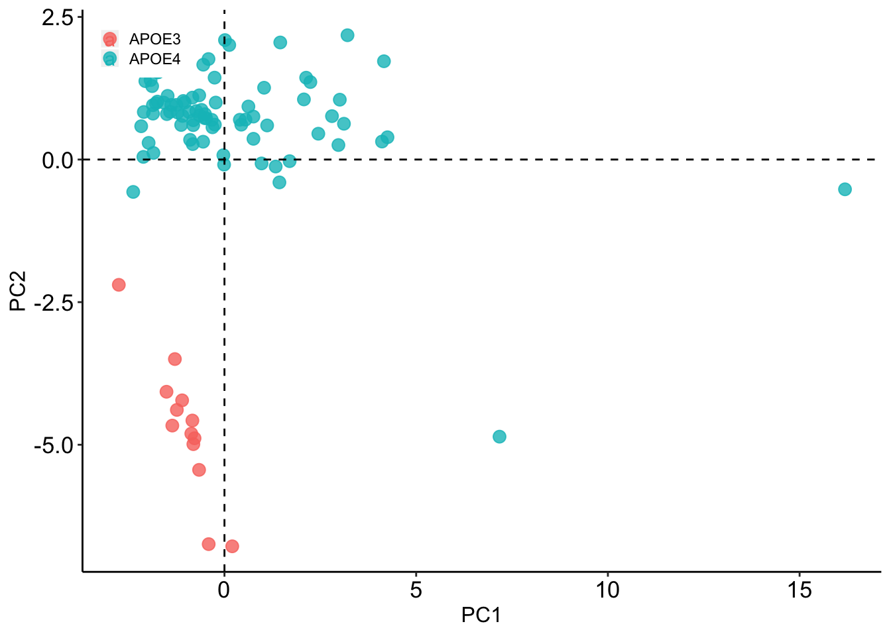
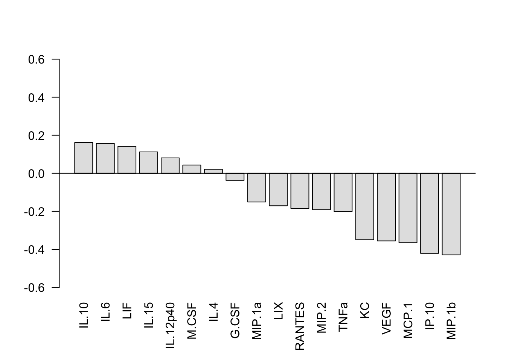

NeuronOnlyAnalysis
rfleeman95
2020-09-05
Last updated: 2020-09-13
Checks: 7 0
Knit directory: APOEmedia/
This reproducible R Markdown analysis was created with workflowr (version 1.6.2). The Checks tab describes the reproducibility checks that were applied when the results were created. The Past versions tab lists the development history.
Great! Since the R Markdown file has been committed to the Git repository, you know the exact version of the code that produced these results.
Great job! The global environment was empty. Objects defined in the global environment can affect the analysis in your R Markdown file in unknown ways. For reproduciblity it’s best to always run the code in an empty environment.
The command set.seed(20200905) was run prior to running the code in the R Markdown file. Setting a seed ensures that any results that rely on randomness, e.g. subsampling or permutations, are reproducible.
Great job! Recording the operating system, R version, and package versions is critical for reproducibility.
Nice! There were no cached chunks for this analysis, so you can be confident that you successfully produced the results during this run.
Great job! Using relative paths to the files within your workflowr project makes it easier to run your code on other machines.
Great! You are using Git for version control. Tracking code development and connecting the code version to the results is critical for reproducibility.
The results in this page were generated with repository version 16b8077. See the Past versions tab to see a history of the changes made to the R Markdown and HTML files.
Note that you need to be careful to ensure that all relevant files for the analysis have been committed to Git prior to generating the results (you can use wflow_publish or wflow_git_commit). workflowr only checks the R Markdown file, but you know if there are other scripts or data files that it depends on. Below is the status of the Git repository when the results were generated:
Ignored files:
Ignored: .Rhistory
Ignored: .Rproj.user/
Note that any generated files, e.g. HTML, png, CSS, etc., are not included in this status report because it is ok for generated content to have uncommitted changes.
These are the previous versions of the repository in which changes were made to the R Markdown (analysis/NeuronOnlyAnalysis.Rmd) and HTML (docs/NeuronOnlyAnalysis.html) files. If you’ve configured a remote Git repository (see ?wflow_git_remote), click on the hyperlinks in the table below to view the files as they were in that past version.
| File | Version | Author | Date | Message |
|---|---|---|---|---|
| Rmd | 16b8077 | rfleeman95 | 2020-09-13 | New Analysis with the newly cleaned data (using result, not avg result |
| html | 6335c2a | rfleeman95 | 2020-09-06 | Build site. |
| Rmd | 11cce58 | rfleeman95 | 2020-09-06 | Added significance |
| html | 8f48232 | rfleeman95 | 2020-09-05 | Build site. |
| Rmd | d3a63ef | rfleeman95 | 2020-09-05 | Publish the first analysis files for myproject |
This Analysis is PLSDA of just the neuronal Data for all conditions combined, to compare APOE3 to APOE4
Set Up
library(ggplot2)
library(factoextra)
library(mixOmics)
library(ropls)
library(dplyr)
library("workflowr")Warning: package 'workflowr' was built under R version 3.6.2##THIS IS PLSDA, I MADE A SEPARATE CODE FOR PLSR
#set domain and file to read
setwd("/Users/BeccaFleeman/Box Sync/Proctor_Lab/Thesis/Thesis_Data/Luminex")
My_csv<-read.csv("AllNeuroMedia.csv",header=T,stringsAsFactors = F)
#Make a quantity only version, taking out the first and last column which are characters (patient and class)
My_csv_quant <- My_csv[,2:19]PCA
#Get Principal components; Scale is essentially creating z-score (https://www.r-bloggers.com/r-tutorial-series-centering-variables-and-generating-z-scores-with-the-scale-function/)
PC<-prcomp(My_csv_quant,scale=TRUE)
#Get scree plot (this extracts the eigenvalues/variances of dimensions. Eigenvalues correspond to the amount of the variation explained by each PC.)
#The scree plot is a plot of eigenvalues/variances against the number of dimensions
fviz_eig(PC)
| Version | Author | Date |
|---|---|---|
| 8f48232 | rfleeman95 | 2020-09-05 |
#create a class variable of what the classes/conditions in my csv are
#If using genotype:
class <- My_csv$Class[1:93]
unique(class) #shows you all your unique classes[1] "APOE4" "APOE3"#if using condition of abeta:
#class <- My_csv$Condition[1:64]
#Create a data frame of your principal components with the classes you set
#here, "PC$x" is saying to use the "x" category found in PC; "class" is saying to correspond the class we set in the beginning with the PCs
My_csv_PC<-data.frame(PC$x,class)
My_csv_PC #view it PC1 PC2 PC3 PC4 PC5
1 3.008276109 1.04936515 -0.32544049 0.90485320 0.13226169
2 3.208906817 2.17922533 1.61478904 -3.76908970 -5.38859356
3 0.624382700 0.92978766 -0.19124211 0.36303168 0.36420536
4 4.251538951 0.39086793 -0.70043664 0.54800748 1.25075267
5 16.184069395 -0.52208116 -4.35437578 3.06785074 2.23705018
6 4.159588510 1.72305714 -0.01913214 -1.48427430 -0.58600868
7 0.013382232 2.09423489 0.60421922 -1.11285317 -0.52970105
8 -0.815148568 0.60317288 -0.66143502 -0.11277202 0.13721082
9 0.755212289 0.75294485 1.48818687 0.92103311 0.54028124
10 0.124566716 2.00788854 0.84557132 -1.49651976 -1.42114321
11 -0.331807976 0.69642465 1.05233291 0.59231972 0.71823378
12 0.967565277 -0.06843828 2.48411976 1.12296042 0.94662121
13 1.433221963 -0.40056337 2.68870551 0.90791482 0.66514726
14 -0.552567438 1.66242194 1.56817627 -1.15608339 -1.25208506
15 -1.095383356 0.76480028 0.18334275 0.20240937 0.47743853
16 -0.227403512 0.99852770 0.42865580 0.90002695 0.49500971
17 1.455372085 2.05236640 0.05125626 -1.48493425 -0.93770056
18 -0.598164720 0.87076816 0.05293311 0.28618625 0.58665517
19 -0.506616885 0.79549306 0.65744193 0.63046151 0.74288426
20 -0.658571359 1.12558239 1.02899694 1.02986720 0.62190234
21 -0.416552058 1.76180354 0.42109249 -0.51712853 -0.01464666
22 -0.923909343 0.83301327 -0.46193894 0.13596299 0.56096287
23 -0.835313601 1.08586739 0.35062152 0.71700277 0.75478520
24 -1.937484751 1.90060217 0.56143788 -0.54293907 -0.12082819
25 -0.649816093 0.77168676 0.42029146 0.66458451 0.65129450
26 -1.864642886 0.80463058 0.93526410 0.86296189 0.70968003
27 -0.478114952 0.72540419 1.97120393 1.34738139 0.64721876
28 -1.614796434 1.90613745 0.57766225 -0.28941255 0.13626120
29 -1.749270933 1.01614632 -0.40134430 0.37487878 0.22014971
30 0.547533961 0.69944803 -0.75661281 -1.13429885 0.72725602
31 2.072119611 1.05422101 -1.53197064 -1.89339057 0.58059699
32 2.804311335 0.76086349 -1.87142487 -2.29954709 0.44072455
33 4.108818673 0.31528712 -2.46905217 -2.26497317 0.70191416
34 2.130465790 1.43492632 -0.76501601 -1.02249051 0.23627218
35 3.116163128 0.62747486 1.95265466 -0.79775480 0.24023822
36 -0.028538240 0.07625438 -0.41978572 -1.65187881 0.85868565
37 -0.828171750 0.27027027 -0.18611808 -1.54370918 0.96989387
38 1.699646447 -0.02836944 -0.84567795 -2.46284223 0.50631146
39 -0.009833465 -0.08897308 -0.16515726 -1.62389151 0.03035444
40 1.112946998 0.59784845 0.18518675 -0.58322428 0.53319617
41 7.173754467 -4.85843835 9.72649222 -1.27161917 0.67292456
42 -1.038275882 0.99875910 -0.66135840 -0.75231309 0.80480230
43 -1.129584539 0.60615117 -0.47531116 -1.24479208 0.80618589
44 0.438771847 0.61110311 -0.16084132 -1.58764390 0.59781658
45 -1.866747594 0.95289557 0.70963925 -0.26925642 0.41967357
46 -1.583734294 0.99803901 0.52089507 0.08964078 0.51588143
47 -0.516547364 0.72579437 -0.45019530 -1.42841052 0.59021123
48 -1.853057582 0.11566501 -0.98989789 -1.33944422 0.85559720
49 -1.978245942 0.29212520 -1.27230367 -1.05392860 0.76600891
50 -2.115069007 0.04655857 -1.36990069 -1.56207274 1.04153993
51 -2.171672673 0.58382232 -0.75333455 -0.63058783 0.58322942
52 -2.103484210 0.83357380 -0.55471605 -0.25578280 0.47476650
53 -1.926157496 1.39311743 -0.06849285 0.46971221 0.56583733
54 -2.379950819 -0.56769877 -1.78376809 -1.86302164 1.24871306
55 -1.359911933 -4.66395013 -1.44664265 0.69693579 -0.61495326
56 -0.864509988 -4.80539060 -0.59784956 0.07244924 -0.04699131
57 -1.104083358 -4.22140757 0.14188327 -0.05796642 0.64489513
58 -0.836591226 -4.57542668 -0.16115518 -0.74879916 1.15866371
59 -1.241542632 -4.38919763 -0.39119133 -0.63133312 0.65359329
60 -1.292892575 -3.49797957 -0.79136939 0.31610715 0.13253123
61 -0.411408929 -6.74248464 -1.10493825 0.18230066 -0.95974595
62 0.202990595 -6.78065055 -0.22050192 0.17444126 -1.42529376
63 -0.811230702 -4.98980816 0.40350940 -0.72156515 0.40285135
64 -0.662136009 -5.44036808 0.28483755 -0.30829255 -0.29463803
65 -1.511930442 -4.07113871 -0.30324083 0.25545232 0.23165070
66 -0.780333433 -4.88626076 -0.72207095 1.02615652 -1.28593533
67 -2.755515569 -2.19649827 -2.37773176 0.39402758 -1.63823187
68 0.755784109 0.36343932 -0.15640665 0.45110441 -1.53461511
69 2.971845610 0.25418720 -1.08341143 0.75856587 -3.04610135
70 2.447800495 0.45272013 -1.32449826 0.66576187 -1.75075321
71 -0.312561591 0.56530422 -0.69151972 1.75717314 -1.41401972
72 1.033426678 1.25877990 0.80029956 2.20954282 -0.43727040
73 2.240511789 1.35860149 0.20908836 1.10861448 -0.97874203
74 0.400960079 0.69741131 0.11737885 1.04780453 -0.33363412
75 -0.812500323 0.68932981 -0.40950226 0.88061403 -0.51729755
76 -0.556632534 0.31227845 -0.41134163 0.43939211 0.01724506
77 1.335545192 -0.12257758 -1.20126571 0.56312941 -2.59624461
78 -0.896426450 0.34561771 -0.42204108 1.39631451 -1.96797262
79 -0.257167987 1.43580281 0.29788124 1.30108311 0.27182692
80 -1.073705810 1.02685963 -0.08123439 0.78005947 -0.05869516
81 -0.735513539 0.84961958 0.36135285 1.24334540 -0.82695692
82 -1.787528384 0.98571619 0.06783839 0.59139023 0.15234586
83 -1.222516993 0.82405118 0.17483422 0.32939932 0.34379934
84 -1.502198175 0.79657124 -0.42464533 1.44143038 -1.03049662
85 -0.250785613 0.61117307 -0.18776830 1.52577337 -2.05554278
86 -1.730014143 1.53234396 0.67855261 1.48056488 0.28571131
87 -2.063391267 1.37414729 0.41531366 0.92510469 0.32372841
88 -1.389519221 0.95719510 0.46292823 0.76820945 0.21101963
89 -1.482507591 1.11624513 0.62737980 0.68406226 0.36315995
90 -1.418138656 0.83663732 -0.16318746 0.85063141 -0.28655795
91 -1.255609131 0.95806738 0.11914948 0.19413119 0.45638599
92 -1.886025780 1.28683879 0.41784567 0.84015164 0.05163935
93 -1.730014143 1.53234396 0.67855261 1.48056488 0.28571131
PC6 PC7 PC8 PC9 PC10
1 -0.14789711 0.91368763 1.459790272 0.103885428 -0.48010621
2 3.54405243 -0.68662246 0.512317745 -1.810197846 -0.93803637
3 -0.14936166 1.06426663 0.345907152 -0.104517926 -0.31921116
4 0.11495505 0.77653050 0.590694413 -0.641950638 -0.58643899
5 3.15298473 -0.63930947 -1.609536853 0.087179278 -0.01565665
6 1.37737987 0.15815700 -0.707695038 0.286200213 0.55759858
7 0.90045222 0.20497271 -0.255000004 0.726497663 0.74220674
8 -0.46783572 1.38096257 -0.387009999 -0.417957912 -0.14565878
9 -0.18892471 0.40101522 1.119576846 -0.153577401 -0.55099170
10 1.51616363 0.18419456 0.020542121 0.141726947 0.43379700
11 -0.03806821 0.28989844 0.340884018 -0.316973103 -0.10894675
12 -0.93308332 -0.39402364 0.192014580 -0.774465544 -0.79542568
13 -0.52011232 -0.43108565 0.129783993 -0.457975197 -0.73209636
14 1.51359629 -0.25657899 -0.693641754 -0.079476347 0.28298899
15 0.28028245 1.16666796 0.004994455 -0.123667284 -0.32864297
16 0.43000178 1.08961784 0.577798874 -0.100783627 -0.29895546
17 0.63130772 0.44680607 0.830929622 0.370646275 0.22156887
18 -0.06232847 1.25188924 0.109033302 -0.587044268 -0.18134148
19 0.15841345 0.56618979 0.542873947 -0.361330609 -0.13986271
20 0.28625419 0.29697664 0.229980141 -0.132215941 -0.28934303
21 0.72570359 0.55412887 -0.161985799 0.302272354 0.22345602
22 0.16872389 1.57527901 -0.517736124 -0.373554060 -0.21734458
23 0.74466361 0.93198453 0.310516099 0.040953418 -0.01967307
24 1.00806078 -0.01304524 -0.487562447 0.496183390 0.68490921
25 0.94142950 0.81668131 0.501477158 -0.129618263 0.04487541
26 0.51045397 0.16466725 0.215974190 -0.163008676 0.04638814
27 -0.12071144 -0.58924561 0.072464986 -0.123496627 -0.24455511
28 0.72400857 0.13145517 -0.387706613 0.564853526 0.65514762
29 0.45743715 0.87734741 0.176155130 -0.153173664 -0.12358463
30 -0.52368172 -0.29762785 -0.196079646 0.293668772 0.15402641
31 -1.06622968 -0.16981247 0.625876866 0.590674594 0.25294898
32 -1.53924013 -0.25741632 1.011827654 0.170441233 0.14079983
33 -1.70938024 0.22581123 1.141896805 -0.223765600 0.40282786
34 -0.77900886 0.19571391 1.487695414 0.586869590 0.30007228
35 -0.70667485 -0.34344268 0.466220065 1.357537304 0.79558913
36 -0.94863583 -0.10932548 -0.566458275 -0.802950260 -0.30401515
37 -0.64019637 -0.08511660 -1.136829786 -0.203424826 0.09090013
38 -1.55908558 -0.44761608 0.564615148 -0.048073399 0.32646386
39 -0.66338444 -0.24049278 -1.188214460 0.019682343 0.08021514
40 -0.17225754 0.93604647 0.726133970 0.220446284 -0.21844371
41 -1.35646248 0.48591615 -1.093066528 1.244262475 -0.33639345
42 0.07477001 0.39647731 -0.576928629 -0.310745706 0.14401901
43 -0.64560433 -0.30648980 -0.658399761 -0.446273406 0.30003794
44 -0.31331390 -0.02422192 -0.570526800 0.339688103 0.52556102
45 0.65139558 -0.23525975 -0.143106105 0.857114758 0.46437969
46 0.54397231 -0.08756813 0.034635535 0.673824065 0.35359984
47 -0.57290377 -0.12809400 -0.397759190 -0.240722569 0.39672303
48 -0.08429834 -0.59746498 -0.613267156 0.235627520 -0.44273856
49 0.22562304 -0.34554852 -0.131510856 0.247880365 -1.02473725
50 -0.42461814 -0.44046200 -0.896483393 -0.494797730 -0.78826594
51 0.62270303 -0.27263875 0.066952409 0.835695308 -0.78608675
52 0.98757674 -0.47561115 0.225982958 1.251317849 -0.73660601
53 1.01638093 0.26211906 0.020970566 0.337102389 -0.34250361
54 -0.43766986 -0.91209205 -0.977649667 -0.265835869 -1.38182393
55 0.75459931 -0.62525592 1.032151149 0.892202225 0.65885092
56 0.62521368 -0.05618159 -0.162499250 0.553202553 0.23976041
57 0.96845748 -0.17976732 0.939731620 0.127832525 0.48511124
58 0.02613562 -0.16464352 0.282736061 -0.618975431 0.07740120
59 0.48311190 -0.31399603 0.534887618 -0.643427749 0.46744900
60 0.32886368 0.39387835 0.020945697 -0.953094901 0.86884756
61 -0.61687240 0.10086647 -0.518089964 -0.177337844 0.24440163
62 -0.22601526 0.28064548 -0.658495679 0.039169936 -0.43889629
63 0.94533335 -0.43005314 0.657558064 -1.054519429 -0.79691168
64 0.87337682 -0.30832308 0.579121432 -0.174449899 -0.13100671
65 1.07674667 -0.07634255 0.888938826 -0.003670938 0.51751985
66 0.25103362 0.85839552 -0.277841075 -0.344576972 1.10490124
67 0.50870543 -0.51609374 -0.187582743 2.913112807 -1.79624911
68 -1.01677622 0.08997018 -0.745774017 -0.317408669 -0.03550751
69 -1.73149442 0.39818752 0.225034669 0.090507244 -0.26638042
70 -1.93574833 0.33225328 0.626737299 0.246964197 -0.34459170
71 -0.58399044 0.98033720 -0.821803640 0.592721765 0.10623132
72 -0.47971948 -1.83082265 0.463672120 -0.356530507 -0.62792381
73 -1.51149078 -3.03550278 0.525156022 -0.156280444 0.59044551
74 -0.58721309 -0.05084081 -0.228552510 -0.029719372 0.08381467
75 -0.62114898 -0.14454276 -0.470819888 -0.337985182 0.27241627
76 -0.95696754 0.21061365 -0.950786656 -0.773156896 -0.19798848
77 -2.19625139 0.39116396 -0.371653990 -0.284865655 0.08492499
78 -0.61167890 0.87059738 -0.921637510 0.206580866 -0.01002732
79 0.02569690 -0.58330076 0.814864720 -0.109885138 -0.15375716
80 0.29867337 -0.01682477 0.437102455 0.244724118 0.26181613
81 -0.49411276 -0.59514067 -0.460176113 -0.290815305 0.08330346
82 0.29186719 0.25014694 -0.312876847 -0.078051814 0.22114926
83 -0.38083727 -0.26903596 -0.409375653 -0.463756008 0.35700979
84 -0.68654238 0.13177254 -0.664096130 0.092368664 0.09993211
85 -0.59340192 0.22225837 0.449562819 0.185757529 -0.01752356
86 0.14215128 -1.52005357 0.059947005 -0.282771184 0.22439072
87 0.42899636 -0.40444405 0.230024296 -0.264392404 0.07326986
88 -0.07970907 -0.33709926 -0.121896346 -0.187231634 0.31971011
89 0.28883285 -0.70266016 -0.079065531 -0.088482926 0.48029807
90 -0.21087978 -0.02453508 -0.471012181 -0.187479829 0.25053851
91 0.14664432 -0.48535519 -0.167723746 -0.191574794 0.42251920
92 0.37648184 -0.27946603 -0.128720958 0.127410537 0.25274530
93 0.14215128 -1.52005357 0.059947005 -0.282771184 0.22439072
PC11 PC12 PC13 PC14 PC15
1 -0.289993938 -0.7163358755 -0.161839259 -0.2296893956 0.2463813455
2 -0.120492154 0.7511399184 -0.041058961 -0.1242697617 -0.1140347957
3 0.946220135 0.1970291783 0.296638124 0.2263616877 -0.4172898374
4 0.184235140 -0.4892328762 -0.036597856 -0.1204668701 0.1086275817
5 -0.438266018 0.1827446052 0.192537457 -0.0241396839 -0.1830991024
6 0.838019403 -0.9469226626 -0.050447389 0.0428298632 0.1197302202
7 0.714452597 -0.4708164230 0.497222209 0.2528788095 0.0222599438
8 -0.060319300 0.0582878970 0.072821107 0.0003214212 -0.0763431334
9 0.221737255 -0.5092456246 0.412156149 -0.2357302972 0.2089524762
10 -0.160414333 -0.6351718389 -0.274884846 -0.0491674336 0.0125630407
11 0.610904063 -0.1709694471 0.603324595 -0.4297483726 -0.5101633056
12 0.325258727 -0.1196279480 0.447022916 -0.4401839056 0.1792487721
13 -0.052641346 -0.4496876549 0.424244403 0.7142444384 0.3619871783
14 0.209290503 -0.0824202177 0.158117810 -0.0352378336 0.0739742087
15 -0.162019405 0.0756527316 0.129972642 0.1307087585 0.3383359102
16 0.506793811 0.0346199524 -0.143548037 -0.2514567793 -0.0008086261
17 -0.422366972 -0.6071428779 -0.191225098 0.3311203014 0.4453704555
18 0.540233915 -0.0238798574 -0.007933866 -0.3238991729 -0.2975618336
19 -0.339951329 -0.2016875562 -0.118677791 -0.3936777364 -0.1242806794
20 0.374929538 0.0949274079 -0.056643077 0.1660703145 0.0460232402
21 0.226709539 -0.3257796686 -0.145774173 0.3138338427 0.3095069739
22 0.212598855 0.4363191713 -0.407155722 -0.2839820269 0.3260189263
23 0.269165449 0.7053510744 -0.381326590 -0.3566391013 0.2330813046
24 -0.306963018 -0.2087250315 0.487122779 0.1551326755 0.1229105031
25 -0.261954633 0.6082682723 -0.164913424 -0.6510085243 0.3438958763
26 -0.560064240 0.3200362635 0.363661566 -0.3492806752 -0.2935228654
27 -0.167913325 -0.0631525736 0.123937558 0.1029042843 -0.1236067171
28 0.066709808 -0.2811751329 0.393604095 0.1619269410 -0.0218093635
29 -0.966461888 -0.0813921455 0.188106998 0.1182045854 0.0241945815
30 0.512850442 0.8472382497 0.138998630 0.2412720210 0.5169331919
31 -0.305753933 0.2615275805 -0.254734796 -0.2506940912 -0.0106559608
32 -0.269498209 0.0583281624 0.351328903 0.3166923516 -0.0325239460
33 0.539897963 0.5400782407 0.207637701 0.5765602393 -0.1981074344
34 -0.379984331 -0.3234535115 -0.015631707 -0.1432196621 -0.4164505962
35 -0.278907234 0.2132453098 -0.322972898 -0.4874651694 -0.1163923393
36 0.021622178 -0.5389530508 0.698553733 0.2221647957 0.1971867162
37 0.207731832 -0.2558385824 -0.346948013 -0.0111321118 -0.2329503021
38 -0.406060166 0.0717533547 0.278309134 -0.5447910455 -0.1637363775
39 0.414407324 0.2790200258 -0.168150271 -0.2828698426 -0.5035116912
40 0.010933289 -0.4344847670 -0.431782004 0.4181538131 -0.4546070637
41 -0.332871913 0.3717014876 -0.103818847 0.1231658036 0.0078489248
42 -0.180279632 0.2680293385 -0.384059114 0.1072305856 0.3766393600
43 0.117916963 0.1038047440 0.288474311 -0.1777216077 0.0803188079
44 0.428877403 -0.1656430899 -0.597551050 -0.4553050939 0.3775185491
45 -0.322414790 -0.0711939054 0.302358904 -0.3054180777 0.0292405265
46 -0.369890840 0.5191914291 0.203216801 -0.0320834639 -0.3165068337
47 -0.002444661 0.2761469380 0.311415521 -0.0215778713 0.0084233893
48 -0.071533703 -0.0018636747 -0.176922469 -0.0211250508 -0.0864476041
49 -0.003790051 -0.1775962432 -0.086508954 -0.0078361552 0.0666833216
50 -0.115411107 -0.2648275795 -0.113941617 0.0710361901 -0.0660200096
51 -0.014694312 0.3238192171 0.070932390 0.1988648658 -0.1199166424
52 -0.116899956 0.4174101102 0.024075835 -0.0804840003 0.1339226703
53 -0.275732158 0.2889359001 -0.118090552 -0.0140646613 0.3533662712
54 -0.365204662 -0.2613678378 -0.307916273 -0.2472236075 0.0276448769
55 0.533593626 0.1446741551 0.299940471 0.0934296750 0.2225835024
56 -0.042307728 -0.2482654867 -0.482963859 0.4061795929 -0.2794333705
57 0.180522474 0.1816744161 -0.305219814 0.2965772059 -0.2610144931
58 -0.023475125 0.0324934629 -0.379482983 0.2754793487 0.1414952030
59 0.199970811 -0.1681515024 -0.463018355 0.0552447071 0.2537340127
60 -0.233030424 -0.1613553863 0.463106073 -0.0460148755 0.1696142152
61 -0.148319875 -0.1086428363 0.092555878 -0.3139973732 0.0883593909
62 -0.053537950 -0.1224390917 0.159687775 0.3277581994 0.1188277876
63 0.090097013 -0.0579257807 0.342200654 -0.1187537959 -0.2779174192
64 -0.042668283 0.1634434284 0.193388679 -0.0794909513 -0.1456402489
65 0.216034800 -0.0703003613 -0.137961940 -0.3831405237 -0.0874503548
66 -0.122924655 -0.0528233444 -0.046447077 -0.1834841177 0.2957333640
67 0.257588499 -0.2881197100 0.258120650 -0.2766974804 -0.0059898086
68 0.118163524 -0.1136547878 -0.398078487 0.2083611207 -0.3942815234
69 0.129599378 0.1206756492 -0.167687608 -0.1122319351 0.0608694796
70 -0.173686404 0.8200481697 0.212317959 0.4949828714 0.3898568896
71 0.829319202 0.2015829341 -0.135306415 -0.0075785706 0.0272454288
72 0.628905789 0.2195103522 -0.421523416 0.2332207249 0.2725393496
73 0.343392780 -0.2957860323 -0.098615927 -0.5731376627 0.5207384384
74 0.000784474 0.1631054117 -0.466595364 -0.0873084836 -0.1265295616
75 0.266442873 0.3564540297 0.452782330 -0.1737287217 0.0377592997
76 -0.466766245 -0.2410369933 -0.412181826 0.2210936903 0.3363439272
77 -0.620181434 -0.1943645041 0.207610757 -0.2344981862 -0.1128834811
78 0.119036020 -0.0896978980 0.083519030 0.1270556460 -0.1987118831
79 0.103307457 -0.1202768304 -0.725623659 0.5322160633 -0.1770910242
80 -0.346011024 0.4649809435 -0.036942183 0.4202378606 0.0631366937
81 0.217970966 0.1826892334 -0.022021578 -0.1614244835 -0.3239250513
82 -0.350196116 0.2296637541 -0.072536741 0.2848744354 -0.1755811424
83 0.261832802 -0.0007898363 -0.252355005 0.0427125609 -0.2422010247
84 -0.187786118 0.0911864450 0.382271117 -0.0265989432 -0.0501221444
85 -0.653100329 -0.5523090726 -0.258493313 0.0319171815 -0.4038989364
86 -0.105951039 -0.1155164320 -0.100252151 0.0346278513 -0.1450644777
87 -0.085451424 0.0966477581 0.206285956 0.3421607517 -0.2200412699
88 -0.164770053 0.0775052444 -0.421559611 0.0479173273 -0.3853567882
89 0.055909204 -0.1827373900 0.082702679 0.1674866790 -0.0562128054
90 -0.462541187 -0.2358653214 0.029092967 -0.1651741248 0.2727065964
91 -0.314119201 0.5704967070 0.186431165 0.4455985346 -0.0718133718
92 -0.229998615 -0.0072759705 0.198367711 0.2094108432 0.1962389954
93 -0.105951039 -0.1155164320 -0.100252151 0.0346278513 -0.1450644777
PC16 PC17 PC18 class
1 0.207464938 0.104812663 0.1543385417 APOE4
2 -0.018049650 0.106859515 -0.0959033484 APOE4
3 -0.170173052 -0.152906069 -0.1377880898 APOE4
4 0.006517621 -0.212774932 -0.2919609724 APOE4
5 0.048220173 -0.005984846 -0.0006339724 APOE4
6 0.012947019 -0.036298874 -0.0665182592 APOE4
7 -0.039881055 -0.028196013 -0.0003430092 APOE4
8 -0.123303281 -0.257540731 0.1366142120 APOE4
9 -0.131955147 -0.091987402 0.0524182567 APOE4
10 -0.008800607 -0.088932936 0.0952488483 APOE4
11 -0.171901369 -0.055003640 -0.0242389695 APOE4
12 -0.539249506 -0.027978818 -0.0395873027 APOE4
13 0.182808304 0.107936284 0.0264177789 APOE4
14 -0.169800135 0.035860494 0.0836646641 APOE4
15 -0.130348647 -0.302972115 0.0282334636 APOE4
16 0.008620088 0.048955374 0.1123126801 APOE4
17 -0.049969375 -0.017214557 0.0785299571 APOE4
18 -0.004098731 0.053061695 -0.0735156590 APOE4
19 -0.016788008 0.163750241 0.1071436487 APOE4
20 0.067680669 0.413404738 -0.0622613202 APOE4
21 -0.093220038 0.110406665 0.0303760017 APOE4
22 -0.118791011 -0.019752540 0.0336068153 APOE4
23 -0.081434412 0.123911269 0.0853571494 APOE4
24 -0.107917435 -0.116149731 -0.0411352321 APOE4
25 0.174293241 -0.058092936 0.0811328474 APOE4
26 -0.025109730 0.017072041 -0.0856789269 APOE4
27 0.005866287 0.450207830 -0.1003647998 APOE4
28 -0.045377115 0.109092128 -0.0529002351 APOE4
29 -0.035874628 -0.209293137 0.1597754896 APOE4
30 -0.003097992 0.106793507 0.0344473933 APOE4
31 -0.154786649 0.266100233 -0.0775215218 APOE4
32 0.043357984 -0.022625358 -0.1654159790 APOE4
33 -0.084105090 -0.011082577 0.4040320766 APOE4
34 -0.088036271 0.152067197 -0.0717316413 APOE4
35 -0.515151460 -0.153862054 -0.0666339631 APOE4
36 0.029441080 -0.042984681 0.0428316547 APOE4
37 -0.112637565 0.098824587 -0.0291352612 APOE4
38 0.099087365 -0.008778352 0.1390917042 APOE4
39 0.093703276 0.089789200 0.0500838774 APOE4
40 0.292966563 0.322289383 -0.0385165466 APOE4
41 0.259997299 -0.039326678 0.0173333820 APOE4
42 0.011730179 0.224899340 0.0238340740 APOE4
43 0.109586669 -0.027297434 -0.1508662002 APOE4
44 0.231089592 -0.014518171 0.0491032773 APOE4
45 0.297440862 -0.155788809 -0.0806077881 APOE4
46 -0.043509140 -0.003682518 -0.0669555009 APOE4
47 -0.060782142 -0.026997875 -0.0471623077 APOE4
48 0.072162074 -0.171891998 0.0302784926 APOE4
49 0.233846925 0.038638303 0.0617329539 APOE4
50 -0.006876379 -0.036597077 -0.0237959988 APOE4
51 0.003211473 -0.141919826 -0.0315396008 APOE4
52 0.095662500 0.010365744 0.0358091359 APOE4
53 -0.086535942 0.148695002 0.0157537984 APOE4
54 0.014677637 -0.069378412 0.0399987603 APOE4
55 0.559825451 0.173424669 0.0384736278 APOE3
56 -0.416021931 0.157735135 0.2121718392 APOE3
57 0.148728450 -0.222960150 -0.0583488300 APOE3
58 0.079232343 -0.109584194 -0.2272946945 APOE3
59 -0.040248746 -0.065344318 -0.4222671239 APOE3
60 -0.330538408 0.308986293 -0.0018512717 APOE3
61 0.008414771 0.285183126 -0.0325425803 APOE3
62 -0.327691230 -0.066524901 0.1938762925 APOE3
63 0.390659328 -0.056619128 0.2412371055 APOE3
64 -0.091703088 -0.097849574 -0.0333003817 APOE3
65 0.228668918 -0.176203071 0.0185484369 APOE3
66 -0.395837830 -0.081681670 0.0228664464 APOE3
67 -0.348091062 0.069012873 -0.1210759182 APOE3
68 -0.142537720 -0.020441039 0.0913978570 APOE4
69 0.235481949 -0.153151061 -0.1342416186 APOE4
70 -0.072193879 -0.061949981 -0.2179158090 APOE4
71 0.309843311 -0.033453147 -0.0427171875 APOE4
72 -0.207981595 -0.026201607 -0.0109588959 APOE4
73 0.027075054 -0.178836950 0.1969618817 APOE4
74 0.051366839 0.035760700 0.0688528778 APOE4
75 0.084778194 0.195656915 0.0607767117 APOE4
76 0.067298594 -0.034056756 -0.0581852748 APOE4
77 -0.007789094 0.135006065 -0.1494367306 APOE4
78 0.157937019 -0.020528316 0.0766797446 APOE4
79 -0.250192008 -0.069981317 0.1002220986 APOE4
80 0.092755329 -0.165136773 0.0765037700 APOE4
81 0.119359757 -0.073163611 0.1412085603 APOE4
82 0.071559290 -0.110065043 0.0571038703 APOE4
83 0.223920118 -0.148052903 -0.1542948274 APOE4
84 0.254242132 -0.044174719 0.0869563706 APOE4
85 0.164804495 -0.081288189 0.0023800818 APOE4
86 -0.085186911 0.064070094 0.0225949241 APOE4
87 0.130284101 0.023210273 -0.1276139754 APOE4
88 -0.140481051 -0.086808792 -0.1312733992 APOE4
89 0.048102853 -0.078384107 0.0090939294 APOE4
90 0.202016977 0.104410226 -0.0574308858 APOE4
91 -0.216476165 0.018982102 0.0293331395 APOE4
92 0.136984100 -0.069049584 -0.0758736147 APOE4
93 -0.085186911 0.064070094 0.0225949241 APOE4#This plots your principal components based on which ones you pick
ggplot(My_csv_PC,aes(x=PC1,y=PC2,col=class))+
theme_set(theme_grey() + theme(legend.key=element_blank())) +
geom_point(size=3,alpha=0.8) +
theme(axis.text.y=element_text(colour="black",size=13))+
theme(axis.text.x=element_text(colour="black",size=13))+
theme(axis.title.y=element_text(size=12))+
theme(axis.title.x=element_text(size=12))+
theme(panel.grid.major = element_blank(),panel.grid.minor = element_blank())+
theme(panel.background = element_blank())+
theme(axis.line = element_line(colour = "black",size=0.5))+
theme(legend.title = element_blank())+
theme(legend.key.size = unit(0,'lines'))+
theme(legend.justification = c(0,1), legend.position = c(0.01,1))+
geom_hline(yintercept = 0, linetype="dashed", color="black",size=0.5)+
geom_vline(xintercept = 0,linetype="dashed",color="black",size=0.5)+
#geom_text(aes(label=class),hjust=0, vjust=0) #this would label all points
geom_text(aes(label=ifelse(PC2>6,as.character(class),'')),hjust=0,vjust=0) #this labels all outlier ish points here on PC2
| Version | Author | Date |
|---|---|---|
| 8f48232 | rfleeman95 | 2020-09-05 |
#xlim(-10,10)+
#ylim(-10,10)+
#scale_colour_manual(values = c("blue","darkorange"))
#shows loadings; note, if you get rid of the two hashtags below(infront of loading...TRUE and length...PC1), it will sort by #
Loadings_PC1=PC$rotation[,1]
Loadings_PC1=sort(Loadings_PC1,decreasing=TRUE)
PC1Length <- length(Loadings_PC1) #this gives you length (number of variables)
Load_PC1=as.matrix(Loadings_PC1[1:PC1Length])
Load_PC1=t(Load_PC1)
barplot(Load_PC1,col="grey89",las=2,ylim=c(-0.6,0.6))
abline(h=0)
| Version | Author | Date |
|---|---|---|
| 8f48232 | rfleeman95 | 2020-09-05 |
Loadings_PC2=PC$rotation[,2]
Loadings_PC2=sort(Loadings_PC2,decreasing=TRUE)
PC2Length <- length(Loadings_PC2) #this gives you length (number of variables)
Load_PC2=as.matrix(Loadings_PC2[1:PC2Length])
Load_PC2=t(Load_PC2)
barplot(Load_PC2,col="grey89",las=2,ylim=c(-0.6,0.6))
abline(h=0)
| Version | Author | Date |
|---|---|---|
| 8f48232 | rfleeman95 | 2020-09-05 |
Loadings_PC3=PC$rotation[,3]
Loadings_PC3=sort(Loadings_PC3,decreasing=TRUE)
PC3Length <- length(Loadings_PC3) #this gives you length (number of variables)
Load_PC3=as.matrix(Loadings_PC3[1:PC3Length])
Load_PC3=t(Load_PC3)
barplot(Load_PC3,col="grey89",las=2,ylim=c(-0.6,0.6))
abline(h=0)
| Version | Author | Date |
|---|---|---|
| 8f48232 | rfleeman95 | 2020-09-05 |
PLSDA
#Turn your class variable from characters (pre/post; APOE3/APOE4) to factors (1/2)
class(class)[1] "character"class<-as.factor(class)
class(class)[1] "factor"#Cross Validation to tell us which number of LV to choose
##**Note, dont have to change based on data, only have to change if you want diff cv parameters
k_folds <- 3 #this is how many folds we will split out data into
n_LV <- 1:5 #this is the range of LV we will try to model with to get an error for
nrepeats <- 1:10 #going to repeat the 3-fold ten times so a total of 30 test sets are taken
nrepeat_results <- matrix(NA, ncol=5,nrow=30) #makes a big matrix of 5 column (one for each # of LV model),
#and 30 rows (for each LV model). 30 = (10 nrepeats) * (3 k_folds)
#matrix will contain error rate of each fold left out for calculation of a Standard Error
error_groups=matrix(1:30, ncol=3, nrow=10,byrow = TRUE)
# This creates a matrix to be written in for each loop.
# It is used to fill in big matrix appropriately with each little error matrices of the inner loop
# You can do it 100x or 10x, to do 100x, nrepeats should be 1:100,
# nrepeat_results matrix should have 5col and 300 row
# error_groups matrix should have 1:300 (3 columns and 100 rows)
# to do 10x, nrepeats should be 1:10
# nrepeat_results matrix should have 5col and 30 row
# error_groups matrix should have 1:30 (3 columns and 10 rows)
for(n in nrepeats){
# First, need to make a list with numbers 1:3 with length of dataframe.
# AKA code below assigns each data sample a random group of which "fold" to be in
folds_i <- sample(rep(1:k_folds, length.out = nrow(My_csv_quant)))
# Next, make a matrix to fill in with error. # of rows is fold #, # of columns are range of LVs tested
cv_error <- matrix(NA, nrow = k_folds, ncol = length(n_LV))
for (k in 1:k_folds) {
test_i <- which(folds_i == k) #chooses which rows will be in the k fold are we doing (will be an int list of 1/3 of the data)
train_set <- My_csv_quant[-test_i, ] #train set is the rows that were not used for test_i (will be an int list of other 2/3 of the data)
test_set <- My_csv_quant[test_i, ] #test set is the random test_i samples chosen but linked with My_csv_quant
condition_test <- class[test_i] #condition here is just what "class" test data was in
condition_train <- class[-test_i] #condition here is what class training data was in
for (i in n_LV){
PLSDA_train_iLVs <- opls(train_set, condition_train, predI = 1, orthoI = (i-1), fig.pdfC=NULL, info.txtC=NULL, scaleC='standard', crossvalI=8)
#this just ran ONE pls on the training set (2/3 of the data). *each iteration will use a diff number of LV (i-1)
predictions <- predict(PLSDA_train_iLVs, test_set)
#this used the PLSDA above to predict the test set condition
cv_error[k,i] <- 1-mean(as.numeric(condition_test==predictions))
#this is telling it to fill out the cv_error matrix that you made with whether it got it right or wrong
}}
nrepeat_results[error_groups[n,],1:5] <- cv_error
#this is putting the cv_error you just got into the nrepeat_results big matrix you made
}
CVrepeated_error_averages <- matrix(NA,ncol=1,nrow=5) #makes a new matrix to average the results of the error for each LV
for (i in 1:ncol(nrepeat_results)){
CVrepeated_error_averages[i,1] <- mean(nrepeat_results[,i])
}
plot(CVrepeated_error_averages[,1],main="Classification Error, 3-fold CV repeated 10 times", xlab="Latent Variable #", ylab="Classification error rate",ylim=c(0,1))
lines(n_LV, CVrepeated_error_averages[,1], lwd = 2)
| Version | Author | Date |
|---|---|---|
| 8f48232 | rfleeman95 | 2020-09-05 |
#CHANGE BASED ON CV!!!
#do pls in ropls, the pred 1 is always 1, orthoI is the number of orthogonalized LV that you want.
#if you set orthoI=0, you will be doing 1 LV. Leave crossvalI at 8, unsure why though
oplsda<-opls(My_csv_quant,y=class,predI=1,orthoI=1,crossvalI=6)OPLS-DA
93 samples x 18 variables and 1 response
standard scaling of predictors and response(s)
R2X(cum) R2Y(cum) Q2(cum) RMSEE pre ort pR2Y pQ2
Total 0.499 0.912 0.859 0.105 1 1 0.05 0.05
| Version | Author | Date |
|---|---|---|
| 8f48232 | rfleeman95 | 2020-09-05 |
#if using condition instead of class, must do PLS-DA not opls
#oplsda<-opls(My_csv_quant,y=class,predI=1,orthoI=1,crossvalI=6)
#SCORES PLOT:
Scores <- getScoreMN(oplsda)
oScores <- oplsda@orthoScoreMN
Scores_Class <- data.frame(Scores, oScores, My_csv$Class)
colnames(Scores_Class)<- c("LV1", "o1", "Class") #add as many o's as needed here
ggplot(Scores_Class,aes(x=LV1,y=o1,col=Class))+
#theme_set(theme_gray() + theme(legend.key=element_blank())) +
geom_point(size=2,alpha=0.8)+
theme(axis.text.y=element_text(colour="black",size=12))+
theme(axis.text.x=element_text(colour="black",size=12))+
theme(axis.title.y=element_text(size=12))+
theme(axis.title.x=element_text(size=12))+
theme(panel.grid.major = element_blank(), panel.grid.minor = element_blank())+
theme(panel.background = element_blank())+
theme(axis.line = element_line(colour = "black",size=0.5))+
theme(legend.title=element_blank())+
theme(legend.key.size = unit(0, 'line'))+ ##
theme(legend.justification=c(0,1), legend.position=c(0.02,.98))+
theme(legend.text=element_text(size=12))+
scale_colour_manual(values = c("blue","darkorange"))+ #need to label accordingly
geom_hline(yintercept=0, linetype="dashed",
color = "black", size=0.5)+
geom_vline(xintercept = 0, linetype="dashed",
color = "black", size=0.5)+
stat_ellipse(type = "t")+ #default 95% confidence ellipse
xlim(-10,10)+
ylim(-10,10)+
xlab("Scores on LV 1 (24.4%)") + #change this to match input LV!!!
ylab("Scores on LV 2 (49.9%)")+ #change this to match input LV!!!
theme(plot.title = element_blank()) +
theme( panel.background = element_rect(colour = "black", size=1))Warning: Removed 1 rows containing non-finite values (stat_ellipse).Warning: Removed 1 rows containing missing values (geom_point).
| Version | Author | Date |
|---|---|---|
| 8f48232 | rfleeman95 | 2020-09-05 |
#Get the LV Loadings:
#to add more stuff to plot, use ?par
Load<-getLoadingMN(oplsda)
Loadsort<-sort(Load,decreasing=TRUE)
Loading<-t(Load)
barplot(Loading, col="grey89", las=2, ylim=c(-0.6,0.4), ylab="LV1 (Component) 24.4%", font.lab=2)
#!!CHANGE TITLE AND LV %
abline(h=0)
| Version | Author | Date |
|---|---|---|
| 8f48232 | rfleeman95 | 2020-09-05 |
VIP<-getVipVn(oplsda)
VIPsort=sort(VIP,decreasing=TRUE)
barplot(VIPsort, col="grey89", las=2, ylim=c(0,2), main= "VIPs", cex.main=1.5, ylab="LV1 (Component) 24.4%", font.lab=2)
#!!CHANGE TITLE AND LV %
abline(h=1)
abline(h=0)
| Version | Author | Date |
|---|---|---|
| 8f48232 | rfleeman95 | 2020-09-05 |
#VIPmatrix <- as.data.frame(VIP)
#orderedVIPmatrix <- as.data.frame(VIPmatrix[order(VIP),])
#Significance (compare to random) MAKE SURE TO CHANGE # of LV for what you used in model!
#Significance allows us to compare our model error (from CV) to what a "random model" would have for error
#This gives us "significance" or "confidence" in our model
avg_allrandom<-matrix(nrow = 100, ncol = 1) #makes a matrix of 100 rows, 1 column
colnames(avg_allrandom)="Error" #names that 1 column "error"
for (i in 1:100) { #tells it to do this 100x
one.random.model.matrix <- matrix(nrow=30,ncol=32) #makes a matrix of 30 rows and x columns
#note the number of rows can stay 30, the number of columns needs to be the # for test (below) +1
colnames(one.random.model.matrix)=c(1:31, "avg") #names the columns 1,2,3, and avg, for the error in 3 columns then the avg of that error
#must change the number for 1:x to be the number of test
random.condition.vector <- sample(class, length(class), replace = FALSE) #makes a vector of the number of samples you have and randomly puts the two classes (ie e3/e4)
for (j in 1:30) {
test <- sample(1:nrow(My_csv_quant), nrow(My_csv_quant)/3, replace=FALSE) #randomly chooses a third of the data (shows row #) *will be in random order
train <- setdiff(1:nrow(My_csv_quant), test) #makes a vector of the other 2/3 of the data
random_plsda <- opls(My_csv_quant[train,],random.condition.vector[train],
replace=FALSE, predI=1, orthoI=1, crossvalI=6, fig.pdfC=NULL, info.txtC=NULL) #performs plsda on the train data
#EDIT the above line to match!!!
random_plsda_pred <- predict(random_plsda, My_csv_quant[test,]) #predicts plsda results for test (predicting class)
random_plsda_pred_scores <- as.numeric(random_plsda_pred==random.condition.vector[test]) #takes the predictions and makes them numeric (E3/E4 --> 1/2)
one.random.model.matrix[j,c(1:31)] <- random_plsda_pred_scores #puts the values in the matrix of 30 rows and 4 columns
#must change the number for 1:x to be the number of test
avg_error_rate <- (100-(sum(one.random.model.matrix[j,1:31]))/31*100) #takes the ERROR (how often wrong) and makes it a percent
#must change the number for 1:x to be the number of test
one.random.model.matrix[j,32] <- avg_error_rate #then puts that avg error matrix xth column that we named avg
#must change the number for 1:x to be the number of test+1
}
avg_allrandom[i,] <- mean(one.random.model.matrix[,32]) #takes the average of those 100 averages
}
avg_allrandom Error
[1,] 15.59140
[2,] 15.26882
[3,] 15.48387
[4,] 15.16129
[5,] 13.33333
[6,] 15.26882
[7,] 16.55914
[8,] 15.16129
[9,] 16.98925
[10,] 14.83871
[11,] 15.91398
[12,] 17.20430
[13,] 15.80645
[14,] 15.05376
[15,] 16.02151
[16,] 14.51613
[17,] 16.34409
[18,] 14.51613
[19,] 16.34409
[20,] 14.83871
[21,] 15.80645
[22,] 16.98925
[23,] 14.08602
[24,] 17.20430
[25,] 17.63441
[26,] 16.12903
[27,] 15.69892
[28,] 14.62366
[29,] 14.83871
[30,] 15.05376
[31,] 15.80645
[32,] 13.65591
[33,] 15.16129
[34,] 13.65591
[35,] 15.59140
[36,] 13.97849
[37,] 15.69892
[38,] 16.88172
[39,] 14.08602
[40,] 18.38710
[41,] 14.08602
[42,] 16.98925
[43,] 15.91398
[44,] 15.48387
[45,] 15.16129
[46,] 16.02151
[47,] 17.52688
[48,] 17.20430
[49,] 15.05376
[50,] 15.59140
[51,] 16.34409
[52,] 16.34409
[53,] 17.74194
[54,] 16.34409
[55,] 16.02151
[56,] 16.12903
[57,] 17.31183
[58,] 16.77419
[59,] 15.59140
[60,] 15.48387
[61,] 14.83871
[62,] 18.17204
[63,] 13.11828
[64,] 16.45161
[65,] 13.33333
[66,] 17.52688
[67,] 14.83871
[68,] 16.12903
[69,] 16.02151
[70,] 15.80645
[71,] 16.02151
[72,] 16.34409
[73,] 18.06452
[74,] 18.70968
[75,] 16.77419
[76,] 13.44086
[77,] 15.16129
[78,] 16.66667
[79,] 14.62366
[80,] 14.83871
[81,] 14.30108
[82,] 13.22581
[83,] 13.65591
[84,] 17.20430
[85,] 14.30108
[86,] 16.66667
[87,] 12.15054
[88,] 15.26882
[89,] 13.97849
[90,] 16.66667
[91,] 14.73118
[92,] 14.51613
[93,] 14.73118
[94,] 15.26882
[95,] 17.09677
[96,] 16.88172
[97,] 16.34409
[98,] 14.51613
[99,] 14.73118
[100,] 14.62366hist(avg_allrandom, main="Avg Error of Random", xlab="Percent Error", col=blues9, las=1)#lines(density(avg_allrandom),lwd=1)
mean(avg_allrandom)[1] 15.62043sd(avg_allrandom)[1] 1.293744
sessionInfo()R version 3.6.1 (2019-07-05)
Platform: x86_64-apple-darwin15.6.0 (64-bit)
Running under: macOS Catalina 10.15.5
Matrix products: default
BLAS: /Library/Frameworks/R.framework/Versions/3.6/Resources/lib/libRblas.0.dylib
LAPACK: /Library/Frameworks/R.framework/Versions/3.6/Resources/lib/libRlapack.dylib
locale:
[1] en_US.UTF-8/en_US.UTF-8/en_US.UTF-8/C/en_US.UTF-8/en_US.UTF-8
attached base packages:
[1] parallel stats graphics grDevices utils datasets methods
[8] base
other attached packages:
[1] workflowr_1.6.2 dplyr_0.8.3 ropls_1.16.0
[4] Biobase_2.44.0 BiocGenerics_0.30.0 mixOmics_6.8.3
[7] lattice_0.20-38 MASS_7.3-51.4 factoextra_1.0.5
[10] ggplot2_3.2.1
loaded via a namespace (and not attached):
[1] tidyselect_0.2.5 xfun_0.9 purrr_0.3.2
[4] reshape2_1.4.3 colorspace_1.4-1 vctrs_0.2.0
[7] htmltools_0.3.6 yaml_2.2.0 rlang_0.4.0
[10] ggpubr_0.2.3 later_0.8.0 pillar_1.4.2
[13] glue_1.3.1 withr_2.1.2 RColorBrewer_1.1-2
[16] matrixStats_0.55.0 lifecycle_0.1.0 plyr_1.8.4
[19] stringr_1.4.0 ggsignif_0.6.0 munsell_0.5.0
[22] gtable_0.3.0 evaluate_0.14 labeling_0.3
[25] knitr_1.24 httpuv_1.5.2 rARPACK_0.11-0
[28] Rcpp_1.0.2 corpcor_1.6.9 promises_1.0.1
[31] scales_1.0.0 backports_1.1.4 fs_1.3.1
[34] RSpectra_0.15-0 gridExtra_2.3 ellipse_0.4.1
[37] digest_0.6.20 stringi_1.4.3 ggrepel_0.8.1
[40] grid_3.6.1 rprojroot_1.3-2 tools_3.6.1
[43] magrittr_1.5 lazyeval_0.2.2 tibble_2.1.3
[46] crayon_1.3.4 whisker_0.4 tidyr_1.0.0
[49] pkgconfig_2.0.2 zeallot_0.1.0 Matrix_1.2-17
[52] assertthat_0.2.1 rmarkdown_2.3 R6_2.4.0
[55] igraph_1.2.4.1 git2r_0.27.1 compiler_3.6.1